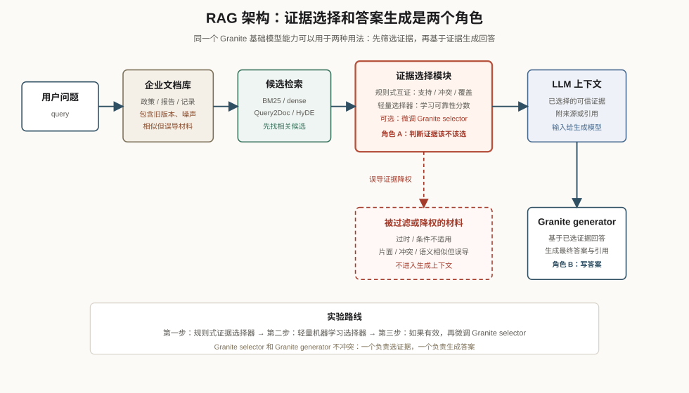

Decision-Worthy Evidence Retrieval for Reliable RAG
从 NIAH 检索准确性到面向 LLM 答案生成的可信证据选择
Summary
本项目聚焦 IBM Granite / enterprise RAG 中的证据检索。LLM 生成答案前，需要从企业文档库拿到真正能支撑回答的材料。现有检索器可以先找出相关候选；本研究进一步关注这些候选证据是否可信、适用、可归因、能互相印证，并训练一个 证据选择器 学会选择适合放进 LLM 上下文的证据。
NIAH 是大场景
NIAH（Needle in a Haystack）是在大量背景信息中找到少量关键信息的场景。比如，在病历里找一个关键检查结果，在法律材料里找一个适用条款，在代码库里找导致 bug 的几行代码。
它的核心难点是：有用信息很少，背景信息很多，目标信息容易被噪声、相似内容或无关内容淹没。
我们的项目属于这个大背景，但范围更具体：RAG 生成答案前的证据检索。
我们的具体范围：RAG 证据检索
IBM Granite 项目提供 enterprise retrieval / NIAH 的基础能力。本研究把这个能力放到 RAG 下游应用里考察：当用户提问时，系统从文档库里选择证据给 LLM，LLM 再基于这些证据生成答案。

这张图展示 RAG 从用户问题到最终回答的证据链路：检索器先召回相关候选，证据选择器再决定哪些材料进入 LLM 上下文，最后由 LLM 生成带引用的回答。传统准确率和召回率主要衡量候选是否相关；本项目关注进入上下文的证据能否真正支撑答案质量和引用可靠性。
在这个场景里，检索系统需要同时满足两点：
- 找到和问题相关的候选证据。
- 从候选中选出能支撑答案的证据进入 LLM 上下文。
已有工作：相关性检索已经很强
通用检索精度已经有成熟技术路线。BM25、dense retrieval、hybrid retrieval、reranking、query expansion、Query2Doc 等方法，主要解决如何召回和排序相关文档；MS MARCO、BEIR、TREC DL 等基准也长期用 Recall@k、MRR、nDCG@k 评估相关文档是否排在前面。
这些方法对本项目仍然重要，可以作为 baseline 和候选生成工具。项目重点放在候选池之后：当多个候选都很相关时，系统怎样识别哪些证据真正适合生成答案。
Research Gap：相关性无法保证证据可信度
企业资料库里，一些文档可能和用户问题高度相似，却不适合作为 LLM 生成答案的依据。它们可能是旧版本信息、片面材料、条件不适用的说明，或者和其他来源互相冲突的内容。
一个直观例子是“老人与海”和“男人与海”。它们在标题和主题上可能有很强的语义相似性，检索系统容易把它们都看作相关材料。但如果用户问的是《老人与海》的作者、情节或文本依据，“男人与海”这类相似材料无法支撑 LLM 生成正确回答。
一旦检索阶段把语义相似但证据错误的材料交给 LLM，模型仍可能生成语言流畅、看似有依据的答案，实际结论却建立在错误证据上。accuracy 衡量能不能找到相关材料，reliability 关注模型最终使用的证据能不能支撑答案。
为什么 reliability 比 accuracy 更适合我们的切入点
前期工作已经做出了可运行的检索和 RAG pipeline，也包括答案评估。这说明我们已经具备基础系统能力。现在更值得推进的问题是：检索出来的内容能不能支撑 LLM 给出可靠答案。accuracy 仍然有用，但在这个项目里，它应服务于答案可靠性和证据可信度。
| 前期版本 | 当前方向 |
|---|---|
| 比较不同检索器能不能找到 needle | 从候选池中学习选择可信证据 |
| 主要看 needle-found@k / MRR / answer F1 | 关注正确证据进入前几个位置的比例、误导证据比例、引用支持度和选择器质量 |
| 检索准确性项目 | RAG 证据可靠性 + 机器学习证据选择器 |
Proposed Method：Decision-Worthy Evidence Retrieval
规则式证据选择适合作为第一步。它能把问题拆清楚：哪些证据互相支持，哪些证据冲突，哪些证据缺少关键条件。但单一规则很难判断复杂证据可靠性。一个材料是否适合放进 LLM 上下文，可能同时取决于语义相关性、时间版本、适用条件、是否覆盖问题中的关键限制、是否和其他材料冲突、是否能被其他证据共同支持。这些因素之间有组合关系，手写规则很容易变得僵硬，也很难决定每个信号应该占多大权重。
机器学习适合接在这里，因为我们已经能构造训练数据：每个问题有标准证据，也有反事实干扰证据、生成式无答案材料和同主题弱负例。规则式证据互证可以先提取可解释信号，例如支持、冲突、覆盖度和互证关系；机器学习证据选择器再从这些样本中学习，哪些信号组合通常对应“能支撑答案”，哪些组合通常对应“看起来相关但会误导”。
整体方法是：现有检索器负责找候选证据，规则式互证负责产生可解释的可靠性信号，机器学习证据选择器负责学习如何综合这些信号，并选择最终进入 LLM 上下文的证据。Granite 继续负责生成答案，证据选择器专门负责答案生成前的证据选择。
具体流程分为四步：
- 候选检索：用 Granite dense、BM25、Query2Doc、HyDE 或重排序方法得到候选证据池。
- 证据分组：把主题相近、共享关键实体、可能支持同一答案的证据放到同一组。
- 证据互证信号：检查同一组证据是否互相支持、是否冲突、是否覆盖关键条件、是否只提供弱支持。
- 机器学习证据选择器：用这些信号训练选择器，给证据或证据簇打可靠性分数，选择最适合进入 LLM 上下文的材料。
证据选择器的训练目标可以用二分类打分或排序学习：提高可信证据的分数，降低冲突、过时、条件不适用或支撑不足材料的分数。方法贡献集中在证据选择环节，让检索结果服务于可靠回答。
实验实施路线
实验实施适合分阶段推进：先证明问题，再逐步增加模型能力。
第一步，先做 规则式证据选择器。用现有检索器找到候选证据，再根据支持、冲突、覆盖关键条件和证据互证关系进行筛选。这一步成本低、可解释，适合先验证“相关性检索不足以保证可信证据进入上下文”。
第二步，训练一个 轻量证据选择器。输入是用户问题、候选证据、证据分组和规则式互证信号；输出是这条证据是否适合进入 LLM 上下文，或者它的可靠性分数。这个阶段可以先用小型分类器或排序模型，比较它是否比普通重排序和规则式方法更能筛掉误导证据。
第三步，如果前两步结果有希望，再考虑 微调 Granite 作为证据选择器。这个 Granite 的角色是证据判断：学习判断候选证据是否可靠、是否支持问题、是否应该进入上下文。另一个 Granite 实例仍然可以作为答案生成模型，基于已选证据生成最终回答。两者不冲突：它们是同一个 Granite 基础模型能力在 RAG pipeline 中的两种角色，也可以实际部署成两个不同的 Granite 实例。
当前实验验证与进展
ML selector 目前最强的地方是“不要漏掉正确证据”，适合做基础证据选择器。规则选择器无法穷尽所有的 evidence selection 情况；ML selector 能较好保住正确证据，但还需要更强特征、更真实负例、更好的训练标签，才能明显筛掉误导证据。Granite prompt 更会判断证据质量，但容易漏选。当前更合理的方向是：用 ML 保 recall，用 Granite / 规则信号增强 evidence quality 判断。
本项目研究 RAG 在相关但不可靠证据混杂的环境下，如何从候选池中选择真正可用于回答生成的证据。重点是降低过时、冲突、条件不适用和弱支持证据进入 LLM 上下文的概率，从而提升答案的证据支撑性和引用可靠性。